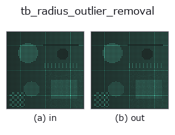

typed op• Datenarten: points → points
• Aufruf: fullseye.apply(img, "tb_radius_outlier_removal", a=0.5, b=0.5) (das 2-D-Modell ist ein Bild plus zwei skalare Regler a,b∈[0,1])

*Die Abbildung ist die tatsächliche Ausgabe auf einer synthetischen 128×128-Eingabe. Links Eingabe, rechts Ausgabe. Punktwolken als Draufsicht-Streudiagramm (Helligkeit = z), 1-D-Reihen als Linie, Volumen als Maximum-Projektion entlang z, Videos als mittleres Bild, komplexe Bilder als Betrag; Rückgabewerte, die kein Bild ergeben, werden als Werte gezeigt.*
*Regler a ändert die Ausgabe nicht (gemessen: identisch bei 0,1 / 0,5 / 0,9).*
*Regler b ändert die Ausgabe nicht (gemessen: identisch bei 0,1 / 0,5 / 0,9).*
Stufen (die vorangehenden Ops → dieser Op, von links nach rechts):
▸ tb_radius_outlier_removal: stages (docs site)
Auf anderen Bildern (synthetische Szene / Foto / Münzen. Obere Reihe: Eingaben, untere Reihe: deren Ausgaben. Regler auf Standard):
▸ tb_radius_outlier_removal: other inputs (docs site)
Entfernt Punkte, deren Anzahl an Nachbarn innerhalb des Radius radius unter min_neighbors liegt (Entfernung isolierter Punkte).
> Die ausführliche Beschreibung unten ist der Originaltext — Zusammenfassung und Überschriften sind übersetzt.
各点を中心に半径 `radius の球を張り、その中に居る他点の数が min_neighbors`
に満たない点を「孤立した粒」として落とす。統計的手法より局所的・直接的で、
センサの実スケールが分かっているときにしきい値を決めやすい。
Parameters
----------
points : array_like, shape (N, 3)
入力点群。
radius : float
近傍とみなす球の半径(> 0)。
min_neighbors : int
残すのに必要な近傍数(自分自身は数えない、既定 8)。
Returns
-------
filtered : ndarray, shape (M, 3)
生き残った点(元の順序を保持)。
keep_mask : ndarray of bool, shape (N,)
各入力点を残すか(True=残す)。
Notes
-----
`radius <= 0` は ValueError。空入力は空を返す(graceful)。
2-D 進化レジストリへ橋渡しした 3d の op `radius_outlier_removal。実装は同じで、呼び出し規約だけ op(v, a, b) に合わせてある。a が min_neighbors(既定 8)を振る。b` は未使用。
• Katalog der Beispieldaten (Download-URLs / Lizenzen) — 2-D nutzt skimage.data (BSD/Public Domain) plus synthetische Bilder, 3-D nennt Download-URLs echter Datenquellen (Stanford, PDS, …).
• Herkunft und Literatur der Operatoren — die Quellen der Forschung/Verfahren, auf denen diese Operatorfamilie beruht.
Das Programm unten ist nachweislich lauffähig (gleiche Eingabe wie die Abbildung). In der Studio-Hilfe wird dieser Block zu Schaltflächen, die es sofort laden und ausführen.
img_to_points 0.50 0.50 tb_radius_outlier_removal 0.50 0.50
▸ Load this pipeline · Load & run
Die folgenden Beispiele rufen den zugrunde liegenden Ledger-Op radius_outlier_removal auf. Dieser Brücken-Op ist dieselbe Implementierung, angepasst an die Konvention fn(v, a, b); das Verhalten gilt unverändert (nur die Aufrufform unterscheidet sich).
• pcl_geodesic — py -3.11 examples_3d/pcl_geodesic.py
points als Eingabe)identity · tb_points_to_voxel · tb_estimate_point_normals · tb_iss_keypoints · tb_angle_3points · tb_project_points · tb_render_point_depth · tb_statistical_outlier_removal
typed)tb_points_to_voxel · tb_estimate_point_normals · tb_iss_keypoints · tb_angle_3points · tb_project_points · tb_render_point_depth · tb_statistical_outlier_removal · tb_voxel_grid_downsample
*Provenance: ops.py — 2D Operator-Registry. Diese Notiz wird von tools/opdocs.py md erzeugt (nicht von Hand bearbeiten).*
© 2026 Kazufumi Furuse — Fullseye operator documentation. Licensed under Apache-2.0.
{kind=link}
{kind=link}